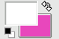
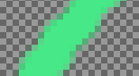
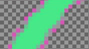

The Semi-flatten filter helps those in need of a solution to anti-aliasing indexed images with transparency. The GIF indexed format supports complete transparency (0 or 255 alpha value), but not semi-transparency (1 - 254): semi-transparent pixels will be transformed to no transparency or complete transparency, ruining anti-aliasing you applied to the logo you want to put onto your Web page.
Before applying the filter, it's essential that you should know the background color of your Web page. Use the color-picker to determine the exact color which pops up as the Foreground color of the Toolbox. Invert FG/BG colors so that BG color is the same as Web background color.
Semi-flatten process will combine FG color to layer (logo) color, proportionally to corresponding alpha values, and will rebuild correct anti-aliasing. Completely transparent pixels will not take the color. Very transparent pixels will take a few color and weakly transparent will take much color.
![[Note]](images/note.png)
|
Note |
|---|---|
|
It is available if your image holds an Alpha channel (see Section 7.36, “Add Alpha Channel”). Otherwise, it is disabled. |

- Presets, “Input Type”, Clipping, Blending Options, Preview, Merge filter, Split view
-
Note These options are described in Section 2, “Common Features”.
- Color
-
This allows you to change the color that is used by this filter to fill in semi transparent areas. You can click the color bar to select a color, or use the color picker to pick a color from your image.
In the example below, the Toolbox Background color is pink, and the image has feathered edges on a transparent background.
Figure 17.430. Semi-Flatten example

Active background color

At 800% zoom level
Full transparency is kept. Semi-transparent pixels are colored with pink according to their transparency (Alpha value). This image will well merge into the pink background of the new page.
Figure 17.431. Filter applied

Result, in GIF format, after applying Semi-flatten filter.